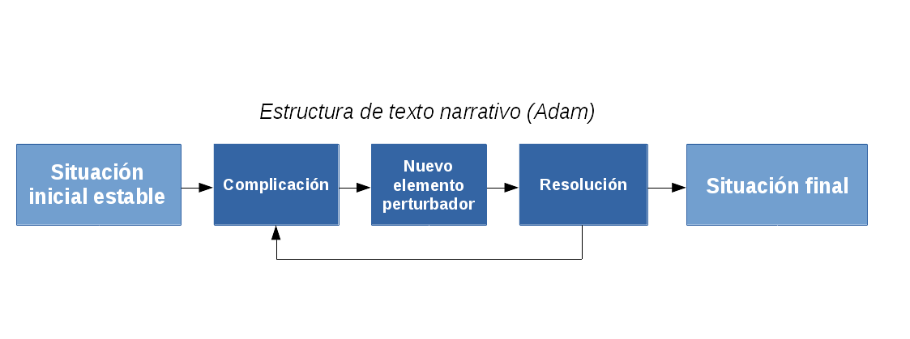
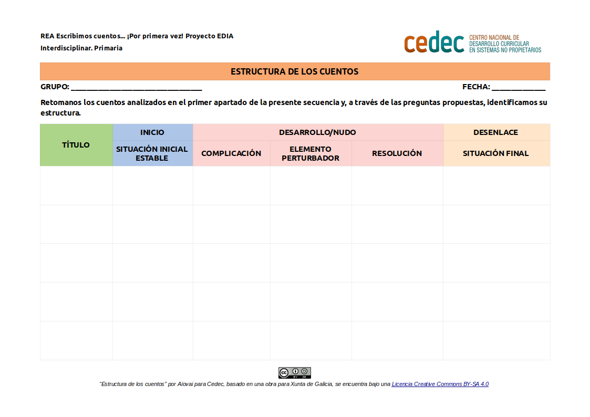

Estructura
En esta tarea el alumnado analizará la estructura de diferentes relatos. A continuación os tenemos unos apuntes sobre este tema.
- Fórmula de estructura de Adam
-
Guiamos al alumnado, con preguntas, por la fórmula de la secuencia propuesta por Adam para elaborar el esquema fundamental de la estructura, posteriormente se ilustrará con detalles secundarios: presentación y descripción del personaje.

- "Morfología del cuento". Vladimir Propp
-
Vladimir Propp fue un escritor soviético que en su libro “La Morfología del Cuento” (1928) describió lo que podemos llamar las 31 fases o funciones de las que constaba un cuento clásico. A través de estas funciones podemos guiar a nuestro alumnado en la creación de tramas en los procesos de creación de textos literarios. Estas funciones pueden repetirse varias veces y no tienen por que aparecer todas.
- Alejamiento: uno de los miembros de la familia se aleja de casa.
- Prohibición: recae sobre el protagonista una prohibición.
- Transgresión: se transgrede la prohibición.
- Interrogatorio: el agresor intenta obtener noticias.
- Información: el agresor recibe informaciones sobre la víctima.
- Engaño: el agresor intenta engañar a su víctima para apoderarse de ella o de sus bienes.
- Complicidad: la víctima se deja engañar y ayuda así a su enemigo, a su pesar.
- Fechoría: el agresor daña a uno de los miembros de la familia o le causa prejuicios.
- Carencia: le falta algo a uno de los miembros de la familia; uno de ellos tiene ganas de poseer algo.
- Mediación: momento de transición, se divulga la noticia de la fechoría o de la carencia, se dirigen al héroe con una pregunta o una orden, se llama o se le hace partir.
- Principio de acción contraria: el héroe buscador acepta o decide actuar.
- Partida: el héroe se va de su casa.
- Primera reacción del donante: su héroe sufre una prueba, un cuestionario, un ataque, que le prepara para la recepción de un objeto o de un auxiliar mágico.
- Reacción del héroe: el héroe reacciona ante las acciones del futuro donante.
- Recepción del objeto mágico: el objeto mágico pasa a disposición del héroe.
- Desplazamiento: el héroe es transportado, conducido o llevado cerca del lugar donde se encuentra el objeto de su búsqueda.
- Combate: el héroe y su agresor se enfrentan en un combate. El héroe recibe una marca.
- Victoria: el agresor es vencido.
- Reparación: la fechoría inicial es reparada o la carencia colmada.
- La vuelta: el héroe regresa.
- Persecución: el héroe es perseguido.
- Socorro: el héroe es auxiliado.
- Llegada de incógnito: el héroe llega de incógnito a su casa o a otra comarca.
- Pretensiones engañosas: un falso héroe reivindica para si pretensiones engañosas.
- Tarea difícil: se le propone al héroe una difícil tarea.
- Tarea cumplida: la tarea es realizada.
- Reconocimiento: el héroe es reconocido.
- Descubrimiento: el falso héroe, agresor o malvado queda desenmascarado.
- Transfiguración: el héroe recibe una nueva apariencia.
- Castigo: el falso héroe o el agresor es castigado.
- Matrimonio: el héroe se casa y asciende al trono.
Fases o funciones de un cuento clásico - AíovaiEducación [Internet] [citado 12 de mayo de 2017].
ACTIVIDAD 1: Analizamos la estructura de diferentes relatos audiovisuales
- Duración:
- 60:00
- Agrupamento:
- Gran grupo
En gran grupo visionamos cortos de animación para, a través de preguntas, guiar al alumnado en el reconocimiento de la estructura de una narración. En un primer momento, como persona docente, tendremos que ejercer como modelo que reflexiona sobre la estructura de textos literarios. Nuestras respuestas orientarán al alumnado sobre el sentido de las preguntas.
- Preguntas a responder
-
Responder colectivamente a:
- ¿En qué momento de la historia se presenta y describe el personaje principal?
- ¿Cómo introduce el tiempo y el espacio en donde se desarrollará la acción?
- ¿Cuál es la situación inicial estable?
- ¿Se identifica fácilmente la primera complicación? ¿Cuál es?
- ¿El protagonista reacciona? ¿Cómo?
- ¿Aparece un nuevo elemento perturbador? ¿Cuál?
- ¿Cómo se resuelve el conflicto?
- ¿Cuál es la situación final? ¿Acaba bien o mal?
- ¿Podrías ahora describir las partes diferenciadas de la estructura de un cuento?
- Cortos
-
La oveja esquilada
Presto
Lifted
El huevo
El vendedor de humo
La luna
ACTIVIDAD 2: Analizamos la estructura de los cuentos trabajados
- Duración:
- 60:00
- Agrupamento:
- Pequeño grupo
En pequeño grupo retomaremos los cuentos analizados en el primer apartado de la presente secuencia y, a través de las mismas preguntas, identificamos su estructura.
Luego haremos una pequeña puesta en común.
Entregar este modelo al alumnado para la identificación de la estructura de un cuento, teniendo en cuenta que es posible su adaptación previa por parte del docente con el software LibreOffice Writer
- Plantilla esctructura de los cuentos (descargar en formato editable odt y en pdf).

Obra publicada con Licencia Creative Commons Reconocimiento Compartir igual 4.0